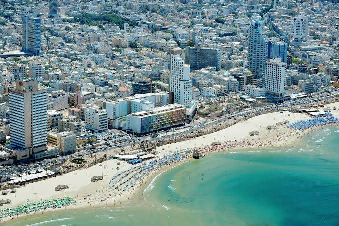

מניינים · תל אביב
מניינים
שבת
בתי כנסת
על האתר
אוטו׳
עב
EN
ד׳ באלול תשפ״ו · 19 באוגוסט 2026
פרשת כי תצא
נץ
06:14
מנחה גדולה
12:52
שקיעה
19:21
צאת הכוכבים
19:41
המניין הבא לידך
מנחה
19:01
בעוד {{heroLeft}} דק׳
לכלל ישראל
אליהו חכים 5, רמת אביב
כ־6 דק׳ הליכה · שקיעה פחות 20 דק׳
כללי
נבדק 14.8.26
רמת אביב · 16 בתי כנסת
רמת אביב, מפת הליכה
300 מ׳ ≈ 4 דק׳ הליכה
תפילה
מנחה
שחרית
ערבית
שבת
נוסח
הכל
אשכנז
עדות המזרח
תימני
חב״ד
מרחק הליכה
10 דק׳
20 דק׳
הכל
זמן שלא פורסם מוצג כלא ידוע. לעולם לא ננחש שעה.
8 בתי כנסת · ממוינים לפי המניין הבא
הצג על המפה
היכל חיים
אופנהיימר 5 · כ־6 דק׳
19:06
מנחה
עדות המזרח
נבדק 12.8.26
אוניברסיטת תל אביב · צימבליסטה
חיים לבנון 42 · כ־11 דק׳
13:55
מנחה
אשכנז
נבדק 3.8.26
תהילת אביב
שרגא פרידמן 1 · כ־14 דק׳
13:00
מנחה
עדות המזרח
נבדק 12.8.26
הרמב״ם
ברודצקי 19 · כ־9 דק׳
בזמן — שעה טרם פורסמה
עדות המזרח
יודעים את השעה? עדכנו
תומכי תמימים · בית חב״ד
טאגור 32 · כ־8 דק׳
15:15
מנחה
חב״ד
נבדק 14.8.26
המרכזי רמת אביב ג׳
אבא אחימאיר 31 · כ־17 דק׳
14:00
מנחה
אשכנז
נבדק 9.8.26
כל הזמנים מחושבים לפי מיקום בית הכנסת ומתעדכנים מדי יום עם השקיעה. תאריך הבדיקה האחרונה מוצג בכל רשומה.
עדכון שעה
גבאים
מקורות המידע